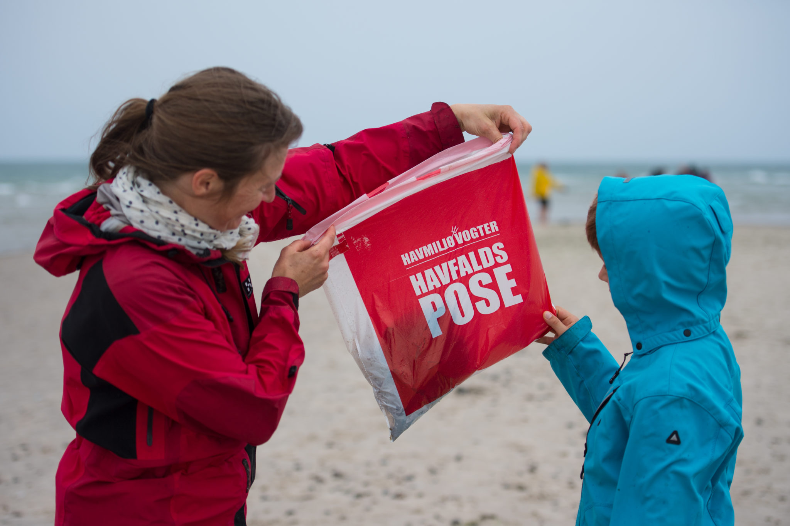

Som Havmiljøvogter er du med til at gøre en konkret forskel for havet og kysterne.
Bliv HavmiljøvogterDen nemmeste måde er ved at hente vores gratis app (App Store/Google Play). Du kan registrere affald, bestille materialer, finde statistikker, tage billeder af stort affald og melde oliefund. Du kan også tilmelde dig via vores hjemmeside: havmiljøvogter.dk.
Hent appen
Har du observeret olieudslip eller andet forurenende affald ved kysten? Klik på knappen nedenfor for at rapportere det direkte via vores app eller hjemmeside.
Indberet fundBørn mellem 5 og 12 år kan nemt blive Junior Havmiljøvogtere. De får enquizbog, stofmærke og Havmiljøvogterhue.
Tilmeld Junior 